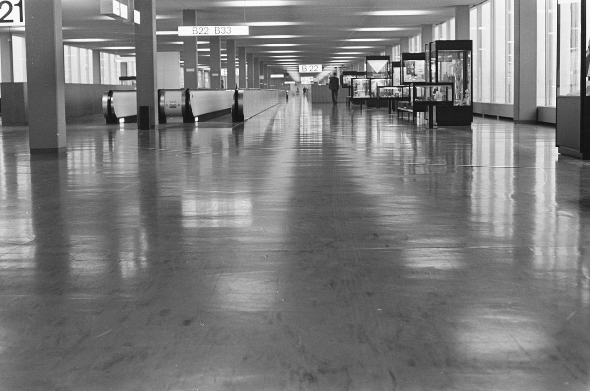
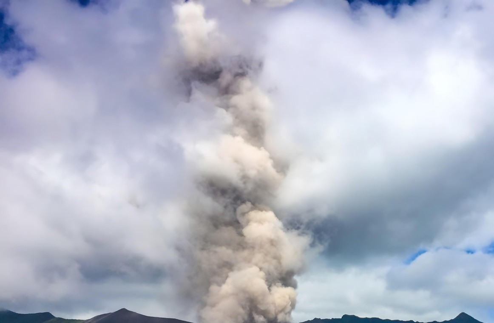
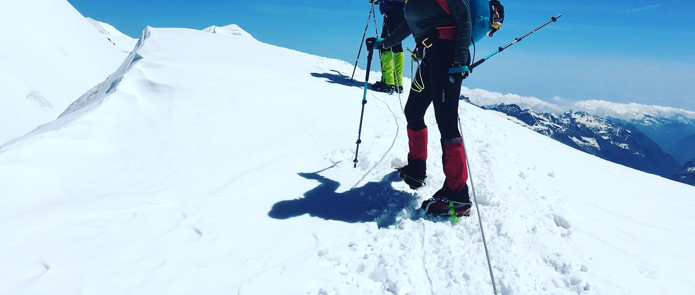
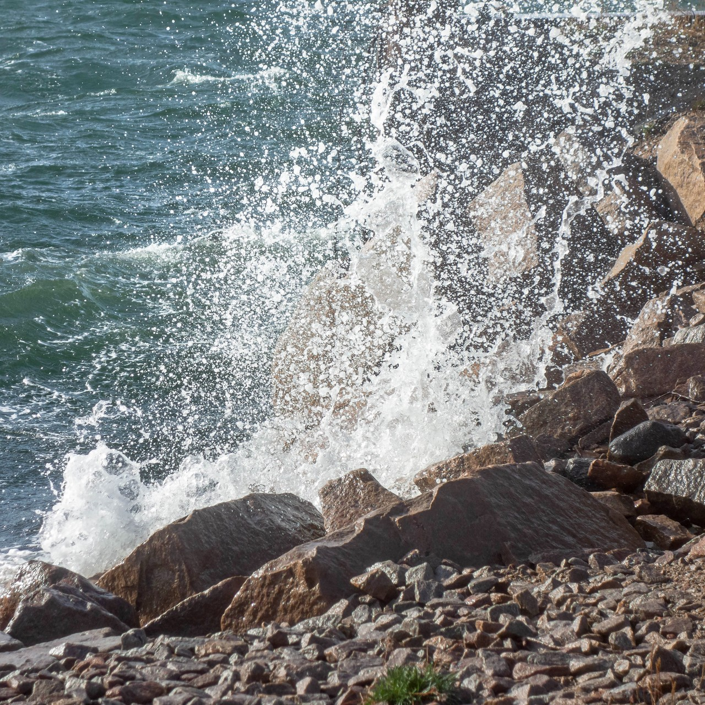
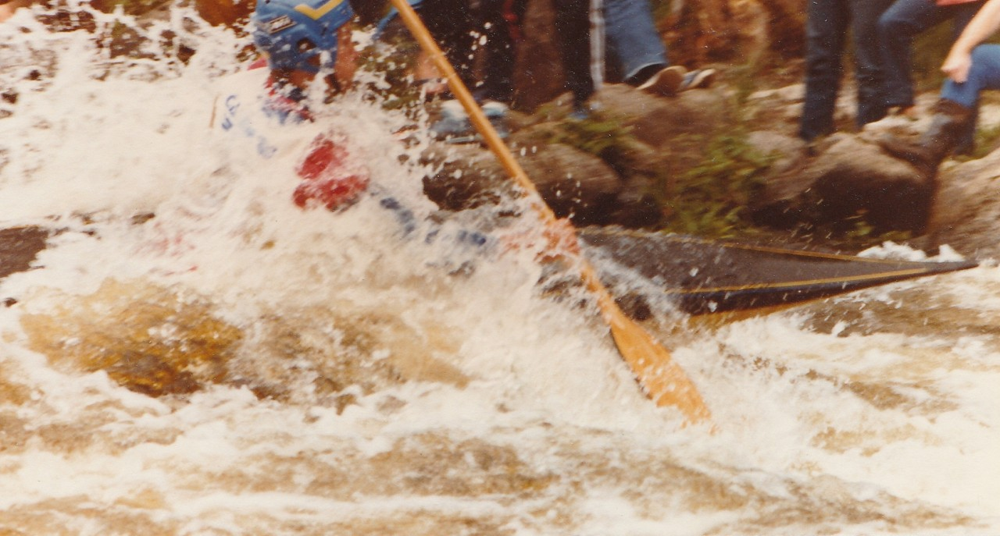

energetic · 初始评价标签
全部标签均为 agent 初选的 provisional 标签。未经过真人试听或审核，不是 ground truth。此目录、答案页和来源描述不得输入推荐器。
盲版 · 完整标注 CSV
 img_0009 · Source / 来源
img_0009 · Source / 来源mismatch · 0/3
低动作强度的镜湖与紧张打击不一致。
provisional · agent_visual_inspection + audio_author_description/source_tags; no human listening img_0015 · Source / 来源
img_0015 · Source / 来源hard_distractor · 0/3
山体与强蓝绿色可显得壮观，但对称静水构图削弱急迫动势。
provisional · agent_visual_inspection + audio_author_description/source_tags; no human listening img_0040 · Source / 来源
img_0040 · Source / 来源strong_match · 3/3
夜间火山熔岩喷发与下方城市形成紧张对比，体现能量而非仅明暗。
provisional · agent_visual_inspection + audio_author_description/source_tags; no human listening img_0025 · Source / 来源
img_0025 · Source / 来源strong_match · 3/3
海浪冲上木栈道，水体运动与对角线形成明显冲击感。
provisional · agent_visual_inspection + audio_author_description/source_tags; no human listening img_0008 · Source / 来源
img_0008 · Source / 来源acceptable_match · 2/3
彩虹可传达昂扬和冲破阴云的希望，适合力量组的上扬面向，但缺少强烈动作。
provisional · agent_visual_inspection + audio_author_description/source_tags; no human listening img_0007 · Source / 来源
img_0007 · Source / 来源acceptable_match · 2/3
冲浪板暗示户外运动，但器材停放、未出现实际冲浪，弱于动态照片。
provisional · agent_visual_inspection + audio_author_description/source_tags; no human listening img_0001 · Source / 来源
img_0001 · Source / 来源hard_distractor · 1/3
鲜艳黄色和向上的形状表面有力量，花朵本身仍静止而轻松。
provisional · agent_visual_inspection + audio_author_description/source_tags; no human listening img_0006 · Source / 来源
img_0006 · Source / 来源hard_distractor · 0/3
色彩鲜明且细节丰富，但睡莲静置在水面，缺少高能量运动。
provisional · agent_visual_inspection + audio_author_description/source_tags; no human listening img_0027 · Source / 来源
img_0027 · Source / 来源strong_match · 3/3
夜间雷暴照亮云层，突发光与风暴张力契合紧张音乐；不是空黑图。
provisional · agent_visual_inspection + audio_author_description/source_tags; no human listening
img_0021 · Source / 来源mismatch · 0/3
空走廊的冷清与停滞缺乏活动能量。
provisional · agent_visual_inspection + audio_author_description/source_tags; no human listening img_0026 · Source / 来源
img_0026 · Source / 来源strong_match · 3/3
汹涌泥色急流穿过峡谷，流动强度与压迫构图契合紧张打击。
provisional · agent_visual_inspection + audio_author_description/source_tags; no human listening img_0028 · Source / 来源
img_0028 · Source / 来源acceptable_match · 2/3
火后道路的冲突痕迹可承接紧张配乐，但画面是事后静态，匹配弱于正在发生的自然活动。
provisional · agent_visual_inspection + audio_author_description/source_tags; no human listening
img_0039 · Source / 来源strong_match · 3/3
火山喷发柱直冲云层；裁去原图前景人物后仍保留强烈自然活动。
provisional · agent_visual_inspection + audio_author_description/source_tags; no human listening img_0033 · Source / 来源
img_0033 · Source / 来源acceptable_match · 2/3
风筝受风飞行有动势，但游戏强度低于代表曲的紧张打击。
provisional · agent_visual_inspection + audio_author_description/source_tags; no human listeningimg_0034 · Source / 来源mismatch · 0/3
静止茶杯和简洁桌面表现日常休息。
provisional · agent_visual_inspection + audio_author_description/source_tags; no human listening img_0019 · Source / 来源
img_0019 · Source / 来源mismatch · 0/3
单片落叶的内省细节与力量感相反。
provisional · agent_visual_inspection + audio_author_description/source_tags; no human listening
img_0029 · Source / 来源strong_match · 3/3
雪脊上的登山装备、脚步与陡斜地形呈现体力与风险；已裁去人物头部。
provisional · agent_visual_inspection + audio_author_description/source_tags; no human listening
img_0031 · Source / 来源strong_match · 3/3
近距离浪花撞击岩石，冻结水珠与强烈方向产生爆发感。
provisional · agent_visual_inspection + audio_author_description/source_tags; no human listening
img_0030 · Source / 来源strong_match · 3/3
皮划艇在白水中穿行，飞溅与倾斜动作体现高强度；已裁去背景观众面部。
provisional · agent_visual_inspection + audio_author_description/source_tags; no human listening img_0013 · Source / 来源
img_0013 · Source / 来源hard_distractor · 1/3
雪山场景与登山照相似，空旷溪谷没有攀登动作或危险姿态。
provisional · agent_visual_inspection + audio_author_description/source_tags; no human listening